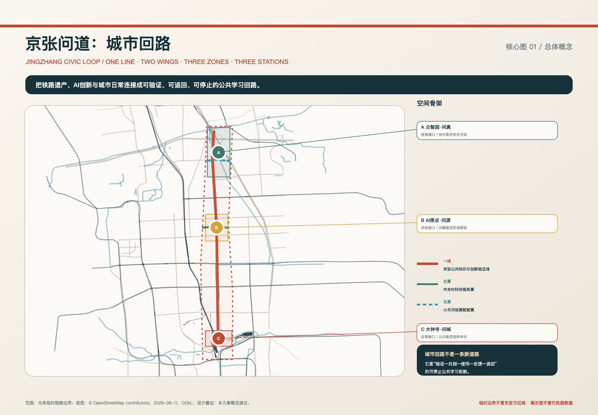

校准接口
众智园 · 问真
观察验证方法｜人工安全台｜问真档案
Centennial Jing-Zhang AI Innovation Belt · Urban Design Open Call
JING-ZHANG · THE WAY FORWARD
百年轨道未止于抵达，智能之城始于回应。
以京张铁路遗产为公共知识线，以众智园、AI原点与大钟寺为校准—共创—反馈三站，让城市创新能够被验证、被质疑、被返回、被停止。
01 / 总览地图 · 三层范围
43.6 km²统筹研究回答产业与未来城市；11.4 km²总体设计组织更新、用地分区与公共底盘；368.4 ha重点区域以三站检验空间和运营。临时边界只用于讨论与复算，不是官方红线。

02 / 用地分区 · 总体结构
“一线”是京张公共知识与创新验证线；“两翼”是中关村科技服务翼和小月河场景赋能翼；“三区”是详细设计区；“三站”是三区面向城市的公共接口，不是第四套并列概念。

03 / 重点区域 · AI 场景
A众智园问技术是否可信；B AI原点问问题与原型从何而来；C大钟寺问真实使用能否反馈、拒绝与申诉。三站采用相同信息结构，长标签全部移到图外，避免遮挡空间信息。

公共接口不是抽象治理口号，而是把城市空间里的进入、退出、人工帮助、责任与申诉做成可见设施。
校准接口
观察验证方法｜人工安全台｜问真档案
共创接口
城市问题台｜原型诊所｜问源长廊
反馈接口
人工权益台｜安静访谈室｜问城回声
04 / 交通慢行 · 蓝绿公共空间
实线表示建议连续公共联系，虚线表示有条件或待核实的联系；图例对线型逐项解释。蓝绿生态、慢行、无障碍和非数字服务构成不能被AI替代的公共底盘。

05 / 核心指标 · 来源与假设
GeoJSON、metrics、任务/标准/深度矩阵是机器权威层。已知值可复算；容积率、建筑总量、道路比例和运营绩效保持未知，等待正式边界、控规、道路、权属、建筑和市政资料。

06 / 系统
5个项目包，从公共知识底盘到受控验证与蓝绿观察。
公告1.3/1.4/1.5、agent.1—agent.6、6项标准与15项深度逐条映射。
空间拓扑已通过；双语、PDF与最终哈希在总装阶段统一校验。
政府公开资料、官方任务书、场地包、标准快照与本地OSM背景。
provisional边界不得作为审批或精确工程结论，正式数据到位后整体复算。